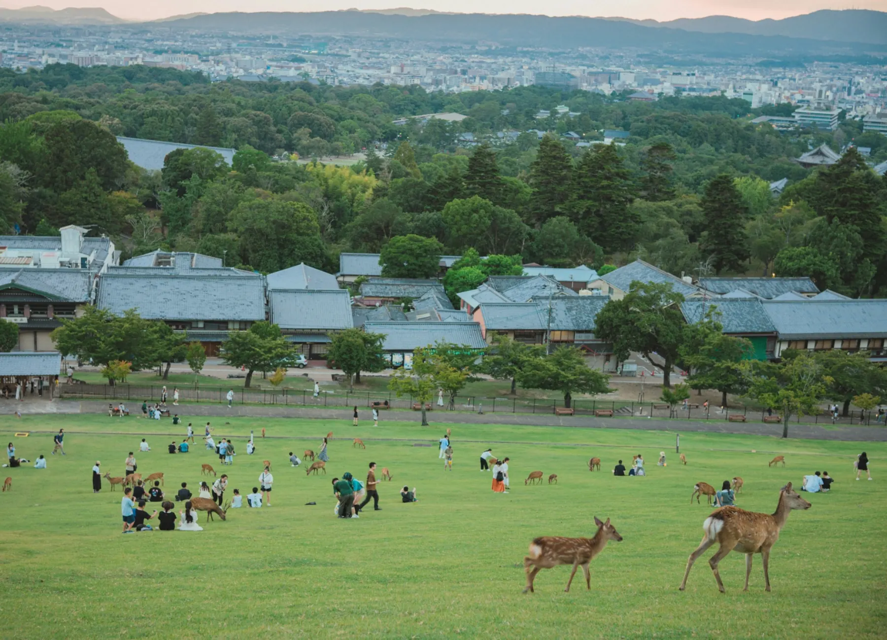

Many visitors ask: “Should I stay in Kyoto or Osaka?”
There is another option.
Stay somewhere between them.
Kansai is not one destination but a collection of very different experiences: Kyoto before the crowds arrive, Osaka after the lights come on, tea beside the river in Uji, deer and temple paths in Nara, and quiet neighbourhoods where ordinary life continues between each day trip.
Keeping one home base means you can enjoy those contrasts without beginning and ending every day with another hotel move. This is not a timetable to follow perfectly. It is the five-day journey I would recommend if you want famous places, local life, and enough space to enjoy both.
Day 1 — Kyoto
Kyoto is at its most beautiful in the morning. Start at Fushimi Inari while the torii paths are still calm. You do not need to climb every step; even the lower trails become more peaceful when you pause between the main viewpoints.
Begin early among the torii gates of Fushimi Inari. Photo: Freddie Marriage / Unsplash.
From there, Tofukuji offers broad temple grounds, historic architecture, and gardens that reward an unhurried walk. It is especially famous in autumn, but its spacious precincts are worthwhile throughout the year.
Continue to Kiyomizu-dera, then let the lanes of Higashiyama lead you toward Gion. The pleasure is not in collecting every landmark. It is in noticing a small shrine, choosing a side street, stopping for tea, and giving yourself time to walk.
If you are visiting during the foliage season, our Kansai autumn guide offers more ideas and practical timing advice.
Day 2 — Osaka
Osaka feels completely different from Kyoto, and that contrast is the reason to give it a full day. Begin around Osaka Castle, where broad park paths and the modern skyline frame one of the city's best-known landmarks.
In the afternoon, head south to Shinsekai and look up at Tsutenkaku. The district is colourful, humorous, and proudly informal. Try kushikatsu—meat, vegetables, and other ingredients fried on skewers—or stop for takoyaki when you want something quick.
Save Dotonbori for evening. Its illuminated signs, restaurant façades, and reflections on the canal are part of the experience. Okonomiyaki, negiyaki, udon, and Osaka-style sushi are all good choices, but leave room for whatever smells best as you walk.
Dotonbori becomes one of Osaka's great street scenes after dark. Photo: Kamaruld Salleh / Unsplash.
Day 3 — Slow Japan
This is the day I would protect from becoming too busy.
Begin with a morning walk through a Japanese neighbourhood. You may see bicycles heading to school, laundry catching the sun, a small shrine between houses, and neighbours stopping for brief conversations. None of these are tourist attractions. Together, they form the texture of everyday Japan.
A quiet local route invites a slower start to the day.
Visit a neighbourhood supermarket or shopping street without treating it as a task to finish quickly. Look at the seasonal fruit, bento shelves, unfamiliar snacks, and prepared dishes. Our guides to bento and groceries and local restaurants we genuinely enjoy can help you choose.
Even an everyday supermarket can reveal new flavours and a little of local life.
Later, walk through Shimin no Mori at Kyoden Pond. It is a small park used by local families and walkers rather than a place organised around sightseeing. Sit for a while, listen to the birds, and allow the day to stay ordinary.
If you would like one gentle excursion, take the train one stop from Kuzuha to Iwashimizu-hachimangu. A short cable-car ride climbs Mount Otokoyama to Iwashimizu Hachimangu, where wooded paths lead to vermilion shrine buildings and views across the surrounding area.
You can also walk from the station to the shrine in about 20 minutes via the Omotesando approach. The route includes a beautiful stone staircase through the trees and is the option I recommend if you are comfortable walking uphill. At the top, an observation deck offers a wide view toward Kyoto—a rewarding pause before exploring the shrine grounds.
From the hills above the city, the landscape opens into a wide panorama.Iwashimizu Hachimangu feels removed from the city despite being close to Kuzuha.The Akane cable car makes the climb up Mount Otokoyama part of the experience. Photo: L26 / Wikimedia Commons, CC BY-SA 4.0.
Quite a few guests tell us that these unremarkable-seeming hours become some of their happiest memories: a walk without a famous destination, choosing dinner with local shoppers, or returning before they are tired.
A good journey does not have to fill every hour. Sometimes the day with the fewest plans is the one that makes Japan feel most real.
Day 4 — Uji
Uji is a gentle day trip built around heritage, water, and tea. Begin at Byodoin, where the Phoenix Hall appears across its pond in one of Japan's most recognisable temple views.
Byodoin is a memorable beginning to a slower day in Uji. Photo: Kai Muro / Unsplash.
Then walk beside the Uji River and cross between the riverbanks and islands at your own pace. The water gives the town an openness that feels very different from central Kyoto.
Authentic Uji matcha should be part of the day. On Byodoin Omotesando, tea shops serve whisked matcha as well as parfaits, ice cream, soba, and traditional sweets. Choose a place that appeals to you rather than searching only for the most famous name.
For a longer walk, follow the river to Kosho-ji. Its Kotosaka approach rises beneath a canopy of trees and feels especially atmospheric in autumn, although the quiet temple setting is rewarding in every season. Our complete Uji guide explains the easy Keihan Railway journey and offers more ideas for the day.
Nara works beautifully as the final day because its great temples sit within a landscape that invites walking. Enter Nara Park slowly and allow time for the deer, but remember that they are wild animals: offer deer crackers carefully, keep paper and food secure, and give them space.

Nara Park combines open landscapes, history, and encounters with deer. Photo: Gavin Li / Unsplash.
Continue toward Todaiji through the great Nandaimon Gate. The scale changes here: immense timber architecture, temple guardians, and the Great Buddha Hall make this more than a visit for photographs.
Do not finish at the Great Buddha Hall. Continue uphill to Nigatsudo. Its wooden terrace looks back across Todaiji and the city, and the quieter approach gives the day a reflective ending. Nara is not only for autumn; spring greenery, summer evenings, and clear winter days each change the mood of the park and temple paths.
These five days are deliberately different: Kyoto's early-morning beauty, Osaka's restless energy, a day inside ordinary Japan, Uji's tea and river, and Nara's temples and deer.
When you keep one base, the time and energy that would have gone into changing hotels can go into the journey itself. You can stay longer at a temple, take an unexpected street, sit beside the river, or return early without feeling that the day was wasted.
That is what allows each day to feel spacious. The itinerary becomes a guide rather than a checklist.
If you are still deciding whether that base should be Kyoto, Osaka, or somewhere between them, start with our practical Where to Stay guide.
A Journey You May Want to Extend
Guests sometimes tell us, simply, “I wish we could have stayed longer,” or “I wish we had one more night.” We understand the feeling. Kansai rewards time, especially when every day does not have to be rushed.
The Showa House is a peaceful home base for exploring Kyoto, Osaka, Uji, and Nara.